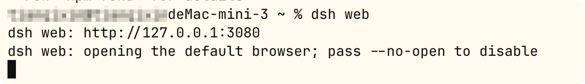
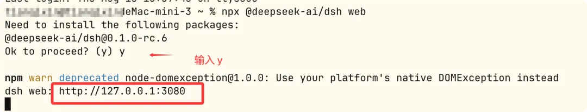

Instalación de DeepSeek Harness
Introducción de este capítuloTres métodos de instalación: instalación con un solo comando npm, instalación desde el código fuente y SDK de Python.
Preparación antes de la instalación
El tiempo de ejecución de DeepSeek Harness se basa en Node.js, el método de instalación con un solo comando recomendado oficialmente no requiere dependencias adicionales.
La instalación desde el código fuente también requiere pnpm y Git.
El método del SDK de Python requiere Python 3.10 o superior.
Sistema operativo:Linux, macOS o Windowstodos compatibles
El SDK de Python es compatible con Linux x64 / arm64 y macOS 14+ (arm64).
| Requisitos del entorno | Instalación con un solo comando npm | Instalación desde el código fuente | Python SDK |
|---|---|---|---|
| Node.js | Obligatorio | Obligatorio | No necesario (el SDK incluye su propio tiempo de ejecución) |
| Git | Opcional | Obligatorio | Obligatorio |
| pnpm | No necesario | Obligatorio | No necesario |
| Python 3.10+ | No necesario | No necesario | Obligatorio |
| Clave de API de DeepSeek | Los tres métodos la requieren (para configurar el modelo; también admite endpoints compatibles con OpenAI) | ||
Primero verifica el entorno local; se necesita Node.js, por ejemplo v20+:
node -v
La instalación desde el código fuente requiere git:
git --version
Métodos de instalación:
| Método | Para quién es adecuado | Resultado |
|---|---|---|
| Instalación con un solo comando npm Recomendado | La mayoría de los usuarios: quienes quieren probar la Web UI lo antes posible | Inicia la Web UI, por defectohttp://127.0.0.1:3080 |
| Instalación desde el código fuente Desarrollo | Quienes quieren desarrollar plugins, leer el código fuente o contribuir | Repositorio local + artefactos de compilación completos; se puede usarpnpm dshpara ejecutar directamente el punto de entrada TypeScript |
| Python SDK Programático | Quienes quieren invocar al agente desde sus propios programas en Python | deepseek_harnessPaquete + tiempo de ejecución integrado, sin necesidad de Node.js del sistema |
Método 1: instalación con un solo comando npm (recomendado)
Podemos usar el comando npm para instalarlo de forma global:
npm install -g @deepseek-ai/dsh
Usar este método de instalación facilita el uso posterior deldshcomando. Una vez completada la instalación, introduce el siguiente comando para iniciar:
dsh web

También puedes usar el comando npx para instalarlo y probarlo rápidamente; ejecútalo en la terminal:
npx @deepseek-ai/dsh web
El comando iniciará la Web UI y, en la primera ejecución, inicializará automáticamentewebla plantilla de configuración y luego imprimirá la dirección de acceso—por defecto eshttp://127.0.0.1:3080。

Verifica si se instaló correctamente:
1. Abre en el navegador la dirección impresa en la terminal (por defectohttp://127.0.0.1:3080）；
2. Si ves la interfaz web de DeepSeek Harness, la instalación se realizó correctamente;
3. Nota: la nueva Web UI no selecciona ningún espacio de trabajo hasta que se agregue uno; esto es normal, se configurará en el siguiente paso.
Consejo:dsh utilizará eldirectorio de invocacióncomo ubicación predeterminada del sistema de archivos. Se recomienda primerocdir a tu directorio de proyecto y luego ejecutarnpx @deepseek-ai/dsh web, de este modo será más conveniente al seleccionar el espacio de trabajo más adelante.
Método 2: instalación desde el código fuente
Es adecuado para desarrollar plugins, leer el código fuente o contribuir; después de clonar el repositorio, ejecuta en orden:
git clone https://github.com/deepseek-ai/deepseek-harness.git cd deepseek-harness pnpm install # 安装依赖（需要 pnpm，可用 npm install -g pnpm 安装） pnpm run build # 构建包与前端产物（生产运行需要） pnpm dsh web # 以源码方式启动 Web UI
Otras entradas al ejecutar desde el código fuente:
pnpm dsh --profile headless "run the tests"— ejecuta una tarea una sola vez e imprime la respuesta final;
pnpm dsh --profile web --dump-config— muestra el árbol de configuración completo que se aplica realmente al iniciar (útil al desarrollar plugins).
Método 3: instalación del SDK de Python
Requisitos previos: Python 3.10+, Git, un endpoint de API y credenciales compatibles con DeepSeek, y un workspace aislado que un agente pueda modificar. Crea un entorno virtual e instala:
git clone https://github.com/deepseek-ai/deepseek-harness.git cd deepseek-harness python -m venv .venv . .venv/bin/activate python -m pip install deepseek-harness-sdk
Después de configurar las credenciales, puedes invocarlo desde tu programa (el SDK incluye su propio tiempo de ejecución,no es necesario que el sistema proporcione Node.js）：
export DEEPSEEK_API_KEY=sk-your-key-here # 如果模型不是默认 DeepSeek 端点，而是 OpenAI 兼容代理，还需要： # export DEEPSEEK_BASE_URL=http://127.0.0.1:8000/v1 # export DSH_MODEL=deepseek-v4-flash
Para usarlo en tu propio programa en Python:
from deepseek_harness import DeepSeekHarness— el archivo incluido en el repositorioexamples/jsonrpc-agent/minimal.pyes un envoltorio ligero para las llamadas al SDK; se puede consultar directamente; al ejecutarlo, se imprime la respuesta final del asistente y el directorio de la sesión recibe registros JSONL que contienen las solicitudes del modelo y las llamadas a herramientas.
Configuración inicial y primera tarea
Independientemente del método utilizado para iniciar la Web UI, el primer uso solo requiere tres pasos:
| Paso | Acción | Descripción |
|---|---|---|
| 1Configurar el modelo | Configuración → Modelo | Introduce la clave de API de DeepSeek y guárdala. El enrutamiento del modeloestará disponible de inmediato, sin necesidad de reiniciar el servidor; también admite otros proveedores y endpoints personalizados compatibles con OpenAI |
| 2Seleccionar el espacio de trabajo | Haz clic en «Seleccionar espacio de trabajo» | Agrega el directorio del proyecto en el que se inició dsh y selecciónalo.Antes de seleccionar un espacio de trabajo, el campo de entrada de la sesión no está disponible |
| 3Ejecutar tareas | Escribe una instrucción en la sesión | por ejemploSummarize this repository and identify its main packages.— el agente leerá y escribirá archivos en el espacio de trabajo, ejecutará comandos, delegará en subagentes y mantendrá un plan; las operaciones que excedan la política de permisos solicitarán primero tu aprobación |
Para la primera tarea, se recomienda comenzar con una instrucción ligera: «Summarize this repository and identify its main packages.»
Deja que el agente se familiarice primero con el espacio de trabajo y luego entrégale tareas reales de forma gradual.— la guía oficial de inicio rápido recomienda
Referencia rápida de comandos comunes
| Comando | Función |
|---|---|
npx @deepseek-ai/dsh web |
Inicia la Web UI (equivalente a--profile web） |
dsh --profile headless "任务描述" |
Ejecuta una tarea una sola vez, imprime la respuesta final y sale (adecuado para scripts/CI) |
dsh plugin --profile <name> <pnpm 参数> |
Gestiona los plugins de un perfil concreto (reenvía a pnpm para que se ejecute en el directorio del perfil) |
dsh --profile web --dump-config |
Muestra el árbol de configuración completo que se aplica al iniciar (sin iniciar el servidor) |
dsh --profile web --dump-default-config |
Muestra el árbol de configuración predeterminado (sin incluir el patch del usuario) |
pip install deepseek-harness-sdk |
Instala el SDK de Python (incluye su propio tiempo de ejecución) |
Acerca de los perfiles:web 与 headlessDos perfiles se inicializan automáticamente a partir de las plantillas integradas en el primer uso; los demás perfiles debendsh plugincrearse. Los parámetros de inicio de dsh van primero y los parámetros de la aplicación van después, por ejemplodsh --profile web --port 8080 中 --portpertenece a la aplicación web.
Preguntas frecuentes y solución de problemas
Problema 1: el navegador no abre http://127.0.0.1:3080
Verifica que el proceso de dsh en la terminal siga en ejecución y no muestre errores; si el puerto está ocupado, puedesdsh --profile web --port 8080cambiar de puerto; comprueba si el cortafuegos permite el puerto local.
Problema 2: npx no encuentra @deepseek-ai/dsh o la versión es demasiado antigua
Primero confirma que Node.js esté instalado y que la versión sea relativamente reciente (node -v); el proyecto está en fase de vista previa para desarrolladores e itera rápidamente; si es necesario, borra la caché de npx y vuelve a intentarlo, o cambia a la instalación desde el código fuente.
Problema 3: falla pnpm install / build al instalar desde el código fuente
Confirma que pnpm esté instalado (npm install -g pnpm); si la red está restringida, puedes configurar un registro espejo para npm/pnpm; la compilación requiere que la versión de Node.js cumpla con la declaración engines del package.json del repositorio.
Problema 4: el campo de entrada de la sesión no está disponible / el agente no puede leer ni escribir archivos
La causa más común esno haber seleccionado un espacio de trabajo— vuelve a «Seleccionar espacio de trabajo», agrega y selecciona el directorio del proyecto; confirma que guardaste una clave de API válida en «Configuración → Modelo»; el enrutamiento del modelo se aplica sin necesidad de reiniciar.
Problema 5: el tiempo de ejecución del SDK de Python no encuentra Node.js
El SDK incluye su propio tiempo de ejecución; en condiciones normales no necesita Node.js del sistema; si se informa que falta el tiempo de ejecución, confirma que instalaste el paquete completo de la misma versión del SDK (python -m pip install deepseek-harness-sdk), y según los requisitos previos oficiales, use Linux x64 / arm64 o macOS 14+ (arm64).
Haz clic para compartir notas
<p style="font-size:14px;">¡Las notas deben ser una extensión del contenido de este artículo!</p><br> <p style="font-size:12px;"><a href="../tougao.html" target="_blank">Para enviar artículos, haga clic aquí</a></p> <p style="font-size:14px;"><a href="../w3cnote/runoob-user-test-intro.html" target="_blank">Cómo obtener el código de invitación de registro</a></p> <h3 class="text-muted"><i class="fa fa-info-circle" aria-hidden="true"></i> Antes de compartir notas, debe <a href=";.html" class="runoob-pop">iniciar sesión</a>.</h3> <p><a href="../w3cnote/runoob-user-test-intro.html" target="_blank">Cómo obtener el código de invitación de registro</a></p>